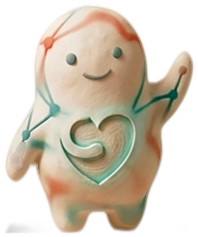

Caira keeps shifts, notes, meds and mileage in one calm place — meet your guide on the left, she'll show you around.
Three taps from clock-on to a clean handover.
One tap puts you on shift.
Six calm tiles cover the whole shift.
A person-first record, no retyping.
Log one-handed, mid-shift. Mileage tracked for you.
Audit-ready, person-first records. Onboard a team in minutes.

I'm your guide to this little corner of the world.